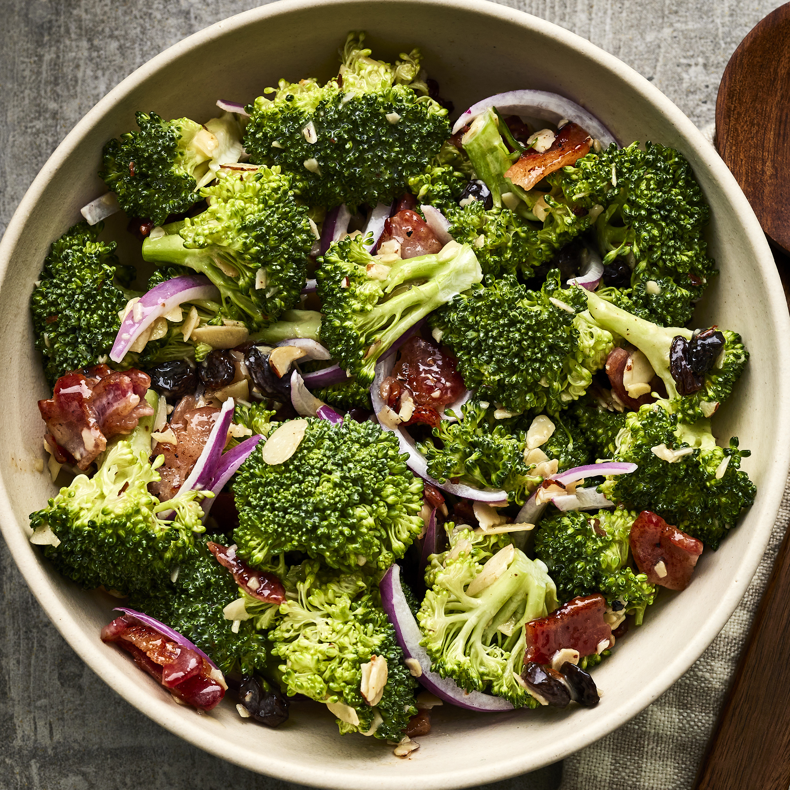

<!DOCTYPE html>
<html lang="en">
</html>
<html>
    <head>
        <meta charset="UTF-8">
        <meta http-equiv="X-UA-Compatible" content="IE=edge">
        <meta name="viewport" content="width=device-width, initial-scale=1.0">
        <title>Broccoli Salad</title>
        <link rel="stylesheet" href="style2.css">
  </head>
    
    <body>
        <h1>Broccoli Salad</h1>
        
        <h3>"This is a yummy summer broccoli salad that uses an interesting combination of fruits,
            <br>vegetables, and meats. Before you decide you won't like it, try it. You'll
            <br>be pleasantly surprised."</h3>
        <p><em>By Anonyme</em></p>
        <br>
        <h3>Ingredients for 8 servings</h3>
        <ul>
            <li>½ pound bacon</li>
            <li>2 heads fresh broccoli</li>
            <li>1 small red onion</li>
            <li>¾ cup raisins</li>
            <li>¾ cup sliced almonds</li>
            <li>1 cup mayonnaise</li>
            <li>½ cup white sugar</li>
            <li>2 tablespoons white wine vinegar</li>
        </ul>
        <br>
   <h3>Steps</h3>
       <ol>
           <li>Place bacon in a deep skillet and cook over medium-high heat until evenly
                 <br> brown, 7 to 10 minutes. Cool and crumble.</li>
           <li>Cut the broccoli into bite-sized pieces and cut the onion into thin bite-sized slices.
                 <br> Combine with the bacon, raisins, and almonds and mix well.</li>
            <li>To prepare the dressing, mix the mayonnaise, sugar, and vinegar together until
                <br>smooth. Stir into the salad.</li>
            <li>Let chill before serving, if desired.</li>
        </ol>
    </body>
</html>
